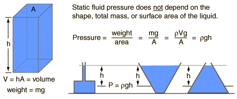

Static Fluid PressureThe pressure in a static fluid arises from the weight of the fluid and is given by the expression
The pressure from the weight of a column of liquid of area A and height h is The most remarkable thing about this expression is what it does not include. The fluid pressure at a given depth does not depend upon the total mass or total volume of the liquid. The above pressure expression is easy to see for the straight, unobstructed column, but not obvious for the cases of different geometry which are shown. Because of the ease of visualizing a column height of a known liquid, it has become common practice to state all kinds of pressures in column height units, like mmHg or cm H2O, etc. Pressures are often measured by manometers in terms of a liquid column height. |
Index fluid pressure calculation Pressure concepts | ||
|
Go Back |
Fluid Pressure Calculation
Note that this static fluid pressure is dependent on density and depth only; it is independent of total mass, weight, volume, etc. of the fluid. |
Index fluid pressure discussion Pressure concepts | ||
|
Go Back |